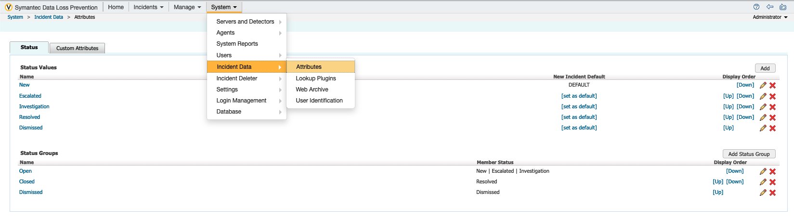
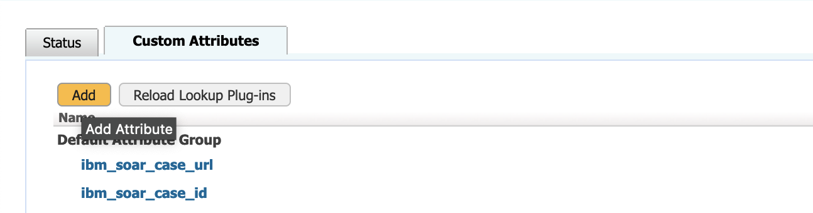
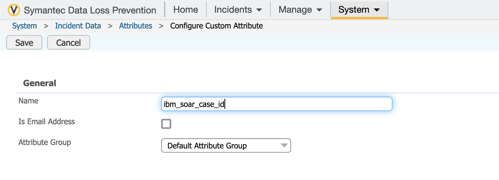
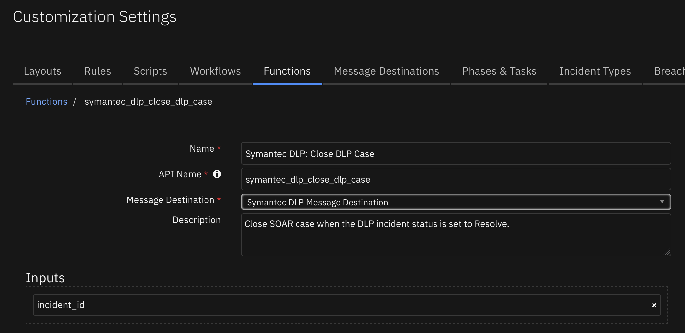
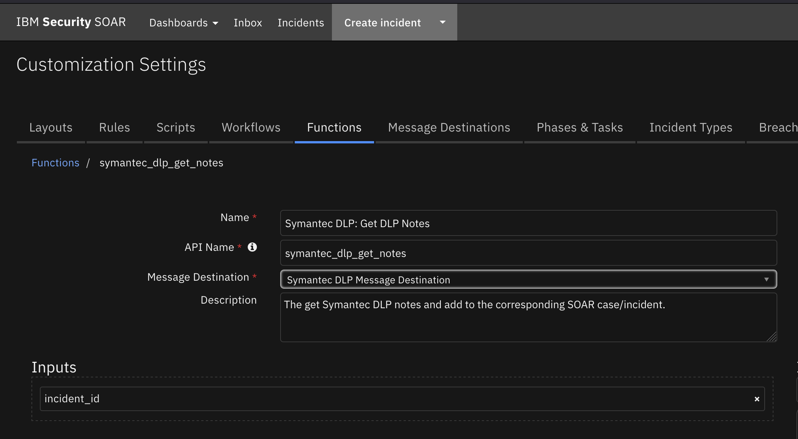
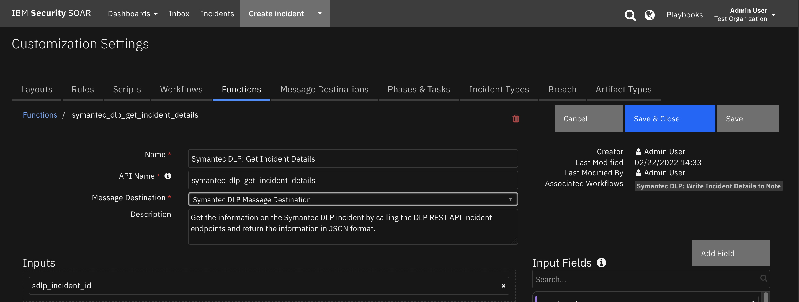
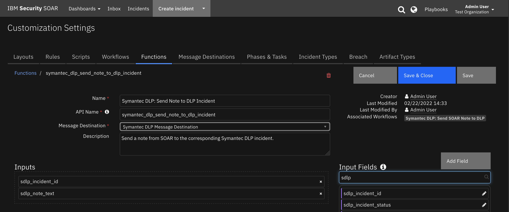
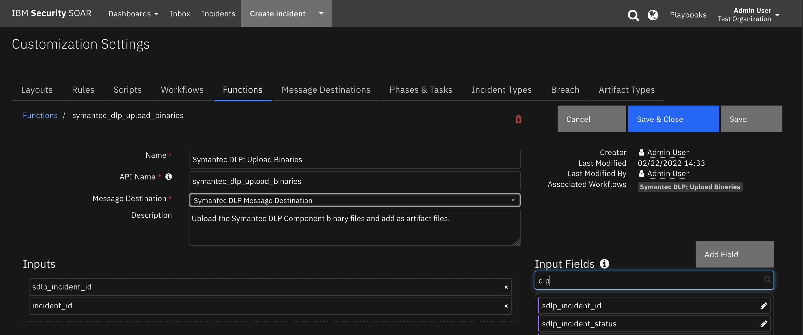

Symantec DLP¶
Table of Contents¶
Release Notes¶
Version |
Date |
Notes |
|---|---|---|
2.0.1 |
2024 |
Fixed bug in dlp_create_case_template.jinja and Upload Binaries function. |
2.0.0 |
2022 |
Support for Symantec DLP REST API |
1.0.0 |
2019 |
Initial Release (SOAP API implementation) |
Overview¶
IBM QRadar SOAR app for Symantec DLP

This app allows bi-directional synchronization between IBM SOAR and Symantec DLP.
Symantec DLP incidents are escalated to IBM SOAR as cases with the creation of artifacts and notes in SOAR from the incident.
Key Features¶
The Symantec DLP app implements the following functionality in the IBM QRadar SOAR platform:
Poll Symantec DLP for incidents using a DLP saved report search filter and create a corresponding incident/case in SOAR.
Add Symantec DLP notes to corresponding SOAR incident/case.
Create artifacts from the Symantec DLP incident in the SOAR incident/case.
Resolve a Symantec DLP incident when the corresponding SOAR incident/case is closed.
Close an SOAR incident/case when the corresponding Symantec DLP incident is resolved in Symantec DLP.
Get the Symantec DLP incident details and write the JSON in a formatted SOAR incident note.
Create a live link in the Symantec DLP incident to the corresponding SOAR case.
Create a live link in the a SOAR case to the corresponding Symantec DLP incident.
Requirements¶
This app supports the IBM Security QRadar SOAR Platform and the IBM Security QRadar SOAR for IBM Cloud Pak for Security.
SOAR platform¶
The SOAR platform supports two app deployment mechanisms, Edge Gateway (also known as App Host) and integration server.
If deploying to a SOAR platform with an App Host, the requirements are:
SOAR platform >=
51.0.0.0.9340.The app is in a container-based format (available from the AppExchange as a
zipfile).
If deploying to a SOAR platform with an integration server, the requirements are:
SOAR platform >=
51.0.0.0.9340.The app is in the older integration format (available from the AppExchange as a
zipfile which contains atar.gzfile).Integration server is running
resilient_circuits>=50.0.0.If using an API key account, make sure the account provides the following minimum permissions:
Name
Permissions
Org Data
Read
Function
Read
Incident
Read, Edit, Create, Owner, Status
Incident Notes
Edit
The following SOAR platform guides provide additional information:
Edge Gateway Deployment Guide or App Host Deployment Guide: provides installation, configuration, and troubleshooting information, including proxy server settings.
Integration Server Guide: provides installation, configuration, and troubleshooting information, including proxy server settings.
System Administrator Guide: provides the procedure to install, configure and deploy apps.
The above guides are available on the IBM Documentation website at ibm.biz/soar-docs. On this web page, select your SOAR platform version. On the follow-on page, you can find the Edge Gateway Deployment Guide, App Host Deployment Guide, or Integration Server Guide by expanding Apps in the Table of Contents pane. The System Administrator Guide is available by expanding System Administrator.
Cloud Pak for Security¶
If you are deploying to IBM Cloud Pak for Security, the requirements are:
IBM Cloud Pak for Security >=
1.10.15.Cloud Pak is configured with an Edge Gateway.
The app is in a container-based format (available from the AppExchange as a
zipfile).
The following Cloud Pak guides provide additional information:
Edge Gateway Deployment Guide or App Host Deployment Guide: provides installation, configuration, and troubleshooting information, including proxy server settings. From the Table of Contents, select Case Management and Orchestration & Automation > Orchestration and Automation Apps.
System Administrator Guide: provides information to install, configure, and deploy apps. From the IBM Cloud Pak for Security IBM Documentation table of contents, select Case Management and Orchestration & Automation > System administrator.
These guides are available on the IBM Documentation website at ibm.biz/cp4s-docs. From this web page, select your IBM Cloud Pak for Security version. From the version-specific IBM Documentation page, select Case Management and Orchestration & Automation.
Proxy Server¶
The app does support a proxy server.
Python Environment¶
Python 3.6, 3.9, and 3.11 are supported. When deployed as an app, the app runs on Python 3.11. Additional package dependencies may exist for each of these packages:
jinja2
resilient_circuits>=50.0.0
Endpoint Developed With¶
This app has been implemented using:
Product Name |
Product Version |
API URL |
API Version |
|---|---|---|---|
Symantec DLP |
15.8 |
https://enforce-server/ProtectManager/webservices/v2 |
v2 |
Prerequisites¶
Symantec DLP Enforce Server
Configuration¶
Configure Symantec DLP Custom Attributes¶
Two DLP Custom Attributes are used by the DLP integration to hold relevant information from SOAR.
ibm_soar_case_id custom attribute is used for filtering out already imported to SOAR incidents and avoiding duplication. Without this custom attribute in place, there is a potential for incident duplication.
ibm_soar_case_url custom attribute is used to provide a live link from Symantec DLP to IBM SOAR.
To create the custom attribute in Symantec DLP navigate to System->Incident Attributes->Custom Attributes

Select the option to Add a new Custom Attribute and create an ibm_soar_case_id and an ibm_soar_case_url custom attribute.
 
Permissions¶
Valid DLP user account created using the DLP Enforce Server administration console in order to access the REST API service.
Installation¶
Install¶
To install or uninstall an App or Integration on the SOAR platform, see the documentation at ibm.biz/soar-docs.
To install or uninstall an App on IBM Cloud Pak for Security, see the documentation at ibm.biz/cp4s-docs and follow the instructions above to navigate to Orchestration and Automation.
App Configuration¶
The following table provides the settings you need to configure the app. These settings are made in the app.config file. See the documentation discussed in the Requirements section for the procedure.
Config |
Required |
Example |
Description |
|---|---|---|---|
api_version |
Yes |
|
Symantec DLP REST API version. |
cafile |
No |
`` |
false or /path/to/certificate. |
polling_interval |
Yes |
|
Poller interval time in seconds. Value of zero to turn poller off. |
polling_lookback |
Yes |
|
Number of days to look back for DLP incidents. Value is only used on the first time polling when the app starts. |
sdlp_host |
Yes |
|
Symantec DLP Enforce Server. |
sdlp_username |
Yes |
|
Symantec DLP account username. |
sdlp_password |
Yes |
|
Symantec DLP account password. |
sdlp_saved_report_id |
Yes |
|
Saved Report ID used to query for incidents. |
create_case_template |
No |
/path/create_case_template.jinja |
Use when overriding the default template. |
close_case_template |
No |
/path/close_case_template.jinja |
Use when overriding the default template. |
update_case_template |
No |
/path/update_case_template.jinja |
Use when overriding the default template. |
Function - Symantec DLP: Close DLP Case¶
Close SOAR case when the DLP incident status is set to Resolve.

Inputs:
Name |
Type |
Required |
Example |
Tooltip |
|---|---|---|---|---|
|
|
Yes |
|
The id of the incident |
Outputs:
NOTE: This example might be in JSON format, but
resultsis a Python Dictionary on the SOAR platform.
results = {
"content": {
"success": true
},
"inputs": {
"incident_id": 3661
},
"metrics": {
"execution_time_ms": 3326,
"host": "local",
"package": "fn-symantec-dlp",
"package_version": "2.0.0",
"timestamp": "2022-04-01 14:47:41",
"version": "1.0"
},
"raw": null,
"reason": null,
"success": true,
"version": 2.0
}
Example Function Input Script:
inputs.incident_id = incident.id
Example Function Post Process Script:
None
Function - Symantec DLP: Get DLP Notes¶
The get Symantec DLP notes and add to the corresponding SOAR case/incident.
NOTE: Notes that are sent to DLP from SOAR that contain the header text From IBM SOAR will not be brought into SOAR Notes to avoid duplication of notes.

Inputs:
Name |
Type |
Required |
Example |
Tooltip |
|---|---|---|---|---|
|
|
Yes |
|
The ID of the incident |
Outputs:
NOTE: This example might be in JSON format, but
resultsis a Python Dictionary on the SOAR platform.
results = {
"content": {
"new_notes": [
"\u003cb\u003eFrom Symantec DLP (2022-03-27T12:37:33)\u003c/b\u003eUser: Administrator\nNote detail: \u003cp\u003eMy note written in SOAR\u003c/p\u003e"
],
"success": true
},
"inputs": {
"incident_id": 3595
},
"metrics": {
"execution_time_ms": 45486,
"host": "local",
"package": "fn-symantec-dlp",
"package_version": "2.0.0",
"timestamp": "2022-03-28 13:38:15",
"version": "1.0"
},
"raw": null,
"reason": null,
"success": true,
"version": 2.0
}
Example Function Input Script:
inputs.incident_id = incident.id
Example Function Post Process Script:
None
Function - Symantec DLP: Get Incident Details¶
Get the information on the Symantec DLP incident by calling three DLP REST API incident endpoints to obtain editableIncidentDetails, staticIncidentDetails, and notes JSON objects which are combined into one JSON object which is returned by the function.

Inputs:
Name |
Type |
Required |
Example |
Tooltip |
|---|---|---|---|---|
|
|
Yes |
|
ID of the Symantec DLP incident |
Outputs:
NOTE: This example might be in JSON format, but
resultsis a Python Dictionary on the SOAR platform.
results = {
"content": {
"editableIncidentDetails": {
"customAttributeGroups": [
{
"customAttributes": [
{
"displayOrder": 1,
"email": false,
"index": 17,
"name": "ibm_soar_case_url",
"value": "https://mysoar.com:443/#incidents/3449"
},
{
"displayOrder": 2,
"email": false,
"index": 18,
"name": "ibm_soar_case_id",
"value": "3449"
}
],
"name": "custom_attribute_group.default",
"nameInternationalized": true
},
{
"customAttributes": [
{
"displayOrder": 1,
"email": false,
"index": 1,
"name": "Resolution",
"value": "Business Issue"
},
{
"displayOrder": 2,
"email": false,
"index": 2,
"name": "Dismissal Reason",
"value": "Bus. Process Issue"
},
{
"displayOrder": 3,
"email": false,
"index": 3,
"name": "Assigned To"
},
{
"displayOrder": 4,
"email": false,
"index": 4,
"name": "Business Unit"
},
{
"displayOrder": 5,
"email": false,
"index": 5,
"name": "Employee Code"
},
{
"displayOrder": 6,
"email": false,
"index": 6,
"name": "First Name"
},
{
"displayOrder": 7,
"email": false,
"index": 7,
"name": "Last Name"
},
{
"displayOrder": 8,
"email": false,
"index": 8,
"name": "Phone"
},
{
"displayOrder": 9,
"email": true,
"index": 9,
"name": "Sender Email"
},
{
"displayOrder": 10,
"email": false,
"index": 11,
"name": "Manager First Name"
},
{
"displayOrder": 11,
"email": false,
"index": 10,
"name": "Manager Last Name"
},
{
"displayOrder": 12,
"email": false,
"index": 12,
"name": "Manager Phone"
},
{
"displayOrder": 13,
"email": true,
"index": 13,
"name": "Manager Email"
},
{
"displayOrder": 14,
"email": false,
"index": 14,
"name": "Region"
},
{
"displayOrder": 15,
"email": false,
"index": 15,
"name": "Country"
},
{
"displayOrder": 16,
"email": false,
"index": 16,
"name": "Postal Code"
}
],
"name": "Predefined",
"nameInternationalized": false
}
],
"incidentId": 468,
"infoMap": {
"detectedRemediationStatus": 0,
"incidentStatusId": 3,
"incidentStatusName": "Resolved",
"isHidden": false,
"isHidingNotAllowed": false,
"preventOrProtectStatusId": 0,
"severityId": 1
}
},
"notes": [
"\u003cb\u003eFrom Symantec DLP\u003c/b\u003e\n \u003cbr\u003e\n \u003cb\u003eUser: \u003c/b\u003eAdministrator added note at 2022-02-07T16:23:50.32\n \u003cbr\u003e\n \u003cb\u003eNote detail\u003c/b\u003e: \u003cp\u003eadded a note 2/7/2022 4:23pm\u003c/p\u003e\n ",
"\u003cb\u003eFrom Symantec DLP\u003c/b\u003e\n \u003cbr\u003e\n \u003cb\u003eUser: \u003c/b\u003eAdministrator added note at 2022-02-08T08:31:12.158\n \u003cbr\u003e\n \u003cb\u003eNote detail\u003c/b\u003e: \u003cp\u003eadded a second note 2/7/2022\u003c/p\u003e\n ",
"\u003cb\u003eFrom Symantec DLP\u003c/b\u003e\n \u003cbr\u003e\n \u003cb\u003eUser: \u003c/b\u003eAdministrator added note at 2022-02-10T20:49:58.47\n \u003cbr\u003e\n \u003cb\u003eNote detail\u003c/b\u003e: \u003cp\u003eadded note to SOAR and will send it to DLP\u003c/p\u003e\n ",
"\u003cb\u003eFrom Symantec DLP\u003c/b\u003e\n \u003cbr\u003e\n \u003cb\u003eUser: \u003c/b\u003eAdministrator added note at 2022-02-10T20:49:58.47\n \u003cbr\u003e\n \u003cb\u003eNote detail\u003c/b\u003e: \u003cp\u003eadded note to SOAR and will send it to DLP\u003c/p\u003e\n "
],
"sdlp_incident_url": "https://my-IP/ProtectManager/IncidentDetail.do?value(variable_1)=incident.id\u0026value(operator_1)=incident.id_in\u0026value(operand_1)=468",
"staticIncidentDetails": {
"incidentId": 468,
"infoMap": {
"attachmentInfo": [
{
"documentFormat": "unicode",
"messageComponentId": 981,
"messageComponentName": "c:\\passwordpolicy.ini",
"messageComponentType": 3,
"originalSize": 16482,
"wasCracked": false
}
],
"creationDate": "2022-02-04T16:08:48.678",
"detectionDate": "2022-02-04T16:08:43.08",
"detectionServerId": 1,
"detectionServerName": "Single-tier Detection Server",
"discoverContentRootPath": "DLP-WINDOWS10-8",
"discoverMillisSinceFirstSeen": 165799618,
"discoverName": "passwordpolicy.ini",
"discoverRepositoryLocation": "DLP-WINDOWS10-8 - c:\\passwordpolicy.ini",
"discoverScanId": 41,
"discoverScanStartDate": "2022-02-04T15:39:28",
"discoverServer": "DLP-WINDOWS10-8",
"discoverTargetId": 21,
"discoverTargetName": "SS number on 9.30.94.38",
"discoverUrl": "DLP-WINDOWS10-8 - c:\\passwordpolicy.ini",
"endpointConnectionStatus": "CONNECTED",
"fileAccessDate": "2022-02-04T16:01:06.431",
"fileCreateDate": "2021-02-12T09:50:16.39",
"fileOwner": "BUILTIN\\administrators",
"isBlockedStatusSuperseded": false,
"matchCount": 2,
"messageAclEntries": [
{
"aclType": "FILE",
"cloudStorageCollaborator": "BUILTIN\\administrators",
"cloudstorageRole": "WRITE",
"grantDeny": "GRANT",
"readACLFile": "BUILTIN\\administrators",
"readACLShare": "BUILTIN\\administrators",
"sharePointACL": "BUILTIN\\administrators",
"sharepointPermission": "WRITE"
},
{
"aclType": "FILE",
"cloudStorageCollaborator": "BUILTIN\\administrators",
"cloudstorageRole": "READ",
"grantDeny": "GRANT",
"readACLFile": "BUILTIN\\administrators",
"readACLShare": "BUILTIN\\administrators",
"sharePointACL": "BUILTIN\\administrators",
"sharepointPermission": "READ"
},
{
"aclType": "FILE",
"cloudStorageCollaborator": "NT AUTHORITY\\system",
"cloudstorageRole": "WRITE",
"grantDeny": "GRANT",
"readACLFile": "NT AUTHORITY\\system",
"readACLShare": "NT AUTHORITY\\system",
"sharePointACL": "NT AUTHORITY\\system",
"sharepointPermission": "WRITE"
},
{
"aclType": "FILE",
"cloudStorageCollaborator": "NT AUTHORITY\\system",
"cloudstorageRole": "READ",
"grantDeny": "GRANT",
"readACLFile": "NT AUTHORITY\\system",
"readACLShare": "NT AUTHORITY\\system",
"sharePointACL": "NT AUTHORITY\\system",
"sharepointPermission": "READ"
},
{
"aclType": "FILE",
"cloudStorageCollaborator": "BUILTIN\\users",
"cloudstorageRole": "READ",
"grantDeny": "GRANT",
"readACLFile": "BUILTIN\\users",
"readACLShare": "BUILTIN\\users",
"sharePointACL": "BUILTIN\\users",
"sharepointPermission": "READ"
},
{
"aclType": "FILE",
"cloudStorageCollaborator": "NT AUTHORITY\\authenticated users",
"cloudstorageRole": "WRITE",
"grantDeny": "GRANT",
"readACLFile": "NT AUTHORITY\\authenticated users",
"readACLShare": "NT AUTHORITY\\authenticated users",
"sharePointACL": "NT AUTHORITY\\authenticated users",
"sharepointPermission": "WRITE"
},
{
"aclType": "FILE",
"cloudStorageCollaborator": "NT AUTHORITY\\authenticated users",
"cloudstorageRole": "READ",
"grantDeny": "GRANT",
"readACLFile": "NT AUTHORITY\\authenticated users",
"readACLShare": "NT AUTHORITY\\authenticated users",
"sharePointACL": "NT AUTHORITY\\authenticated users",
"sharepointPermission": "READ"
}
],
"messageDate": "2022-02-03T22:40:43",
"messageId": 468,
"messageSource": "DISCOVER",
"messageType": "EDAR",
"messageTypeId": 15,
"policyGroupId": 5,
"policyGroupName": "Customer Data Protection",
"policyId": 16,
"policyName": "Customer Data Protection",
"policyVersion": 2
}
}
},
"inputs": {
"sdlp_incident_id": 468
},
"metrics": {
"execution_time_ms": 7312,
"host": "local",
"package": "fn-symantec-dlp",
"package_version": "2.0.0",
"timestamp": "2022-03-03 10:53:00",
"version": "1.0"
},
"raw": null,
"reason": null,
"success": true,
"version": 2.0
}
Example Function Input Script:
inputs.sdlp_incident_id = incident.properties.sdlp_incident_id
Example Function Post Process Script:
# Put the results json into a workflow property so we can call the
# convert_json_to_rich_text script to print readable formatted json in an incident note.
inputs = results.get("inputs")
sdlp_incident_id = inputs.get("sdlp_incident_id")
content = results.get("content")
header = "Symantec DLP Incident Id: {0} Details:".format(sdlp_incident_id)
json_note = {
"version": "1.1",
"header": header,
"json": content,
"sort": False
}
workflow.addProperty('convert_json_to_rich_text', json_note)
Function - Symantec DLP: Send Note to DLP Incident¶
Send a note from SOAR to the corresponding Symantec DLP incident.

Inputs:
Name |
Type |
Required |
Example |
Tooltip |
|---|---|---|---|---|
|
|
Yes |
|
ID of the Symantec DLP incident |
|
|
Yes |
|
Body of the note to add to the Symantec DLP incident |
Outputs:
NOTE: This example might be in JSON format, but
resultsis a Python Dictionary on the SOAR platform.
results = {
"content": {
"reason:": null,
"success": true
},
"inputs": {
"sdlp_incident_id": 625,
"sdlp_note_text": "\u003cb\u003eSymantec DLP: Upload Binaries for incident Id 625\u003c/b\u003e\u003cbr /\u003e 1 artifact files added"
},
"metrics": {
"execution_time_ms": 68314,
"host": "local",
"package": "fn-symantec-dlp",
"package_version": "2.0.0",
"timestamp": "2022-03-29 09:20:06",
"version": "1.0"
},
"raw": null,
"reason": null,
"success": true,
"version": 2.0
}
Example Function Input Script:
inputs.sdlp_incident_id = incident.properties.sdlp_incident_id
inputs.sdlp_note_text = note.text.content
Example Function Post Process Script:
# Import Date
from java.util import Date
# Edit note in SOAR to indicate it was sent to SentinelOne
if results.success:
# Get the current time
dt_now = Date()
note.text = "<b>Sent to Symantec DLP at {0}</b><br>{1}".format(dt_now, unicode(note.text.content))
Function - Symantec DLP: Update Incident in DLP¶
Update the incident status of the Symantec DLP incident in DLP.

Inputs:
Name |
Type |
Required |
Example |
Tooltip |
|---|---|---|---|---|
|
|
Yes |
|
The ID of the incident |
|
|
No |
|
Symantec DLP incident severity ID |
|
|
No |
|
The status of the Symantec DLP incident |
Outputs:
NOTE: This example might be in JSON format, but
resultsis a Python Dictionary on the SOAR platform.
results = {
"content": {
"sdlp_incident_id": 481,
"sdlp_incident_severity_id": "Low",
"sdlp_incident_status": "Dismissed",
"success": true
},
"inputs": {
"incident_id": 3661,
"sdlp_incident_severity_id": "Info",
"sdlp_incident_status": "Dismissed"
},
"metrics": {
"execution_time_ms": 15519,
"host": "local",
"package": "fn-symantec-dlp",
"package_version": "2.0.0",
"timestamp": "2022-04-01 14:47:38",
"version": "1.0"
},
"raw": null,
"reason": null,
"success": true,
"version": 2.0
}
Example Function Input Script:
inputs.incident_id = incident.id
inputs.sdlp_incident_status = "Resolved"
inputs.sdlp_incident_severity_id = None
Example Function Post Process Script:
content = results.get("content")
success = content.get("success", False)
sdlp_incident_id = content.get("sdlp_incident_id", None)
if success:
noteText = '<b>Symantec DLP: Resolve Incident in DLP</b><br> incidentId {0} Resolved.'.format(sdlp_incident_id)
else:
noteText = '<b>Symantec DLP: Resolve Incident in DLP</b><br> incidentId {0}: check the status in Symantec DLP.'.format(sdlp_incident_id)
incident.addNote(noteText)
Function - Symantec DLP: Upload Binaries¶
Upload the Symantec DLP Component binary files contained in a DLP incident and add as either artifact files or attachments. An automatic rule Symantec DLP: Upload Binaries is included in this package but disabled by default. The automatic rule is triggered when a case is created and the function uploads the binary files at that time. However due to bandwidth considerations when uploading many files when the poller is escalating many incidents, enabling this rule may not be advisable. Also included is a manual menu item rule, Symantec DLP: Upload Binaries as Artifact, which allows users to choose the binary files to upload to a case or incident.

Inputs:
Name |
Type |
Required |
Example |
Tooltip |
|---|---|---|---|---|
|
|
Yes |
|
The ID of the incident |
|
|
No |
|
To either upload the file to SOAR as an artifact or an attachment. Added in version 2.0.1 |
|
|
Yes |
|
ID of the Symantec DLP incident |
Outputs:
NOTE: This example might be in JSON format, but
resultsis a Python Dictionary on the SOAR platform.
results = {
"content": {
"artifact_name_list": [
"c:\\Users\\Administrator\\Documents\\three-ss-one-cc.txt"
],
"success": true
},
"inputs": {
"incident_id": 3456,
"sdlp_incident_id": 578
},
"metrics": {
"execution_time_ms": 9905,
"host": "local",
"package": "fn-symantec-dlp",
"package_version": "2.0.0",
"timestamp": "2022-03-07 14:10:32",
"version": "1.0"
},
"raw": null,
"reason": null,
"success": true,
"version": 2.0
}
Example Function Input Script:
None
Example Function Post Process Script:
results = playbook.functions.results.upload_result
sdlp_inputs = results.get("inputs")
sdlp_incident_id = sdlp_inputs.get("sdlp_incident_id")
note = "<b>Symantec DLP: Upload Binaries for incident Id {0}</b><br>".format(sdlp_incident_id)
content = results.get("content")
if content.get("success"):
artifact_list = content.get('artifact_name_list')
num_artifacts = len(artifact_list)
note = "{0} {1} Attachment files added".format(note, num_artifacts)
else:
note = "{0} attachment NOT added".format(note)
incident.addNote(helper.createRichText(note))
Script - Convert JSON to rich text v1.1¶
This script converts a json object into a hierarchical display of rich text and adds the rich text to an incident’s rich text (custom) field or an incident note. A workflow property is used to share the json to convert and identify parameters used on how to perform the conversion.
Typically, a function will create the workflow property ‘convert_json_to_rich_text’, and this script will run after that function to perform the conversion.
Features:
Display the hierarchical nature of json, presenting the json keys (sorted if specified) as bold labels
Provide links to found URLs
Create either an incident note or add results to an incident (custom) rich text field.
Object: incident
Script Text:
# (c) Copyright IBM Corp. 2010, 2020. All Rights Reserved.
VERSION = 1.1
"""
This script converts a json object into a hierarchical display of rich text and adds the rich text to an incident's rich text (custom) field or an incident note.
A workflow property is used to define the json to convert and identify parameters used on how to perform the conversion.
Typically, a function will create workflow property and this script will run after that function to perform the conversion.
Features:
* Display the hierarchical nature of json, presenting the json keys as bold labels
* Provide links to found URLs
* Create either an incident note or add results to an incident (custom) rich text field.
In order to use this script, define a workflow property called: convert_json_to_rich_text, to define the json and parameters to use for the conversion.
Workflow properties can be added using a command similar to this:
workflow.addProperty('convert_json_to_rich_text', {
"version": 1.1,
"header": "Artifact scan results for: {}".format(artifact.value),
"padding": 10,
"separator": u"<br />",
"sort": True,
"json": results.content,
"json_omit_list": ["omit"],
"incident_field": None
})
Format of workflow.property.convert_json_to_rich_text:
{
"version": 1.1, [this is for future compatibility]
"header": str, [header line to add to converted json produced or None. Ex: Results from scanning artifact: xxx. The header may contain rich text tags]
"padding": 10, [padding for nested json elements, or defaults to 10]
"separator": u"<br />"|list such as ['<span>','</span>'], [html separator between json keys and lists or defaults to html break: '<br />'.
If a list, then the data is brackets by the pair specified]
"sort": True|False, [sort the json keys at each level when displayed]
"json": json, [required json to convert]
"json_omit_list": [list of json keys to exclude or None]
"incident_field": "<incident_field>" [indicates a builtin rich text incident field, such as 'description'
or a custom rich text field in the format: 'properties.<field>'. default: create an incident note]
}
"""
import re
# needed for python 3
try:
unicode("abc")
except:
unicode = str
rc = re.compile(r'http[s]?://(?:[a-zA-Z]|[0-9]|[$-_@.&+#\?]|[!*\(\),]|(?:%[0-9a-fA-F][0-9a-fA-F]))+')
class ConvertJson:
"""Class to hold the conversion parameters and perform the conversion"""
def __init__(self, omit_keys=[], padding=10, separator=u"<br />", sort_keys=False):
self.omit_keys = omit_keys
self.padding = padding
self.separator = separator
self.sort_keys = sort_keys
def format_link(self, item):
"""[summary]
Find embedded urls (http(s)) and add html anchor tags to display as links
Args:
item ([string])
Returns:
[str]: None|original text if no links|text with html links
"""
formatted_item = item
if item and not isinstance(item, (int, bool, float)):
list = rc.findall(item)
if list:
for link in list:
formatted_item = formatted_item.replace(link, u"<a target='blank' href='{0}'>{0}</a>".format(link))
return formatted_item
def expand_list(self, list_value, is_list=False):
"""[summary]
convert items to html, adding indents to nested dictionaries.
Args:
list_value ([dict|list]): json element
Returns:
[str]: html converted code
"""
if not isinstance(list_value, list):
return self.format_link(list_value)
elif not list_value:
return u"None<br>"
try:
items_list = [] # this will ensure list starts on second line of key label
for item in list_value:
if isinstance(item, dict):
result = self.convert_json_to_rich_text(item)
if is_list:
items_list.append(u"<li>{}</li>".format(result))
else:
items_list.append(result)
elif isinstance(item, list):
items_list.append(self.expand_list(item, is_list=True))
elif is_list:
items_list.append(u"<li>{}</li>".format(self.format_link(unicode(item))))
else:
items_list.append(self.format_link(unicode(item)))
expand_list_result = self.add_separator(self.separator if not is_list else u"",
items_list,
is_list=is_list)
if is_list:
return u"<ul>{}</ul>".format(expand_list_result)
else:
return u"<div style='padding:5px'>{}</div>".format(expand_list_result)
except Exception as err:
return str(err)
def convert_json_to_rich_text(self, sub_dict):
"""[summary]
Walk dictionary tree and convert to html for better display
Args:
sub_dict ([type]): [description]
Returns:
[type]: [description]
"""
notes = []
if sub_dict:
if isinstance(sub_dict, list):
expanded_list = self.expand_list(sub_dict, is_list=True)
notes.append(self.add_separator(self.separator, expanded_list))
else:
keys = sorted (sub_dict.keys()) if self.sort_keys else sub_dict.keys()
for key in keys:
if key not in self.omit_keys:
value = sub_dict[key]
is_list = isinstance(value, list)
item_list = [u"<strong>{0}</strong>: ".format(key)]
if isinstance(value, dict):
convert_result = self.convert_json_to_rich_text(value)
if convert_result:
item_list.append(u"<div style='padding:{}px'>{}</div>".format(self.padding, convert_result))
else:
item_list.append(u"None<br>")
else:
item_list.append(self.expand_list(value, is_list=is_list))
notes.append(self.add_separator(self.separator, u"".join(unicode(v) for v in item_list), is_list=is_list))
result_notes = u"".join(notes)
if isinstance(self.separator, list):
return result_notes
else:
return result_notes.replace(
u"</div>{0}".format(self.separator), u"</div>").replace(
u"{0}</div>".format(self.separator), u"</div>"
) # tighten up result
def add_separator(self, separator, items, is_list=False):
"""
apply the separator to the data
:param separator: None, str or list such as ['<span>', '</span>']
:param items: str or list to add separator
:return: text with separator applied
"""
_items = items
if not _items:
return "<br>"
if not isinstance(_items, list):
_items = [_items]
if isinstance(separator, list):
return u"".join([u"{}{}{}".format(separator[0], item, separator[1]) for item in _items])
return u"{}{}".format(separator.join(_items), separator if not is_list else u"")
def get_properties(property_name):
"""
Logic to collect the json and parameters from a workflow property.
Args:
property_name: workflow property to reference
Returns:
padding, separator, header, json_omit_list, incident_field, json, sort_keys
"""
if not workflow.properties.get(property_name):
helper.fail("workflow.properties.{} undefined".format(property_name))
padding = int(workflow.properties[property_name].get("padding", 10))
separator = workflow.properties[property_name].get("separator", u"<br />")
if isinstance(separator, list) and len(separator) != 2:
helper.fail("list of separators should be specified as a pair such as ['<div>', '</div>']: {}".format(separator))
header = workflow.properties[property_name].get("header")
json_omit_list = workflow.properties[property_name].get("json_omit_list")
if not json_omit_list:
json_omit_list = []
incident_field = workflow.properties[property_name].get("incident_field")
json = workflow.properties[property_name].get("json", {})
if not isinstance(json, dict) and not isinstance(json, list):
helper.fail("json element is not formatted correctly: {}".format(json))
sort_keys = bool(workflow.properties[property_name].get("sort", False))
return padding, separator, header, json_omit_list, incident_field, json, sort_keys
## S T A R T
if 'workflow' in globals():
padding, separator, header, json_omit_list, incident_field, json, sort_keys = get_properties('convert_json_to_rich_text')
if header:
if isinstance(separator, list):
hdr = u"{0}{1}{2}".format(separator[0], header, separator[1])
else:
hdr = u"{0}{1}".format(header, separator)
else:
hdr = u""
convert = ConvertJson(omit_keys=json_omit_list, padding=padding, separator=separator, sort_keys=sort_keys)
converted_json = convert.convert_json_to_rich_text(json)
result = u"{}{}".format(hdr, converted_json if converted_json else "\nNone")
rich_text_note = helper.createRichText(result)
if incident_field:
incident[incident_field] = rich_text_note
else:
incident.addNote(rich_text_note)
Playbooks¶
Playbook Name |
Description |
Activation Type |
Object |
Status |
Condition |
|---|---|---|---|---|---|
Symantec DLP: Upload Binaries as Attachment - Example (PB) |
Upload binaries from a specified Symantec DLP incident to the SOAR incident as attachments. |
Manual |
incident |
|
|
Custom Fields¶
Label |
API Access Name |
Type |
Prefix |
Placeholder |
Tooltip |
|---|---|---|---|---|---|
Symantec DLP Incident ID |
|
|
|
- |
- |
Symantec DLP Incident Status |
|
|
|
- |
- |
Symantec DLP Incident URL |
|
|
|
- |
- |
Symantec DLP Policy Group ID |
|
|
|
- |
- |
Symantec DLP Policy Group Name |
|
|
|
- |
- |
Symantec DLP Policy ID |
|
|
|
- |
- |
Symantec DLP Policy Name |
|
|
|
- |
- |
Rules¶
Rule Name |
Object |
Workflow Triggered |
Condition |
|---|---|---|---|
Symantec DLP: Close DLP Case |
incident |
|
|
Symantec DLP: Get DLP Notes |
incident |
|
|
Symantec DLP: Resolve Incident in DLP |
incident |
|
|
Symantec DLP: Send SOAR Note to DLP |
note |
|
|
Symantec DLP: Update DLP Incident |
incident |
|
|
Symantec DLP: Update Severity in DLP |
incident |
|
|
Symantec DLP: Upload Binaries |
incident |
|
|
Symantec DLP: Upload Binaries as Artifact |
incident |
|
|
Symantec DLP: Write DLP Incident Details to Note |
incident |
|
|
Troubleshooting & Support¶
Refer to the documentation listed in the Requirements section for troubleshooting information.
For Support¶
This is an IBM supported app. Please search ibm.com/mysupport for assistance.
Template Appendix¶
Below are examples of templates for creating, updating, and closing IBM SOAR incidents. Customize these templates and refer to them in the app.config file. These default jinja templates map SOAR fields to Symantec DLP incident fields.
Each template should be reviewed for correctness in your enterprise. For instance, closing a SOAR incident may include additional custom fields which the default template does not include.
incident_creation_template
{
{%- set comma = joiner(",") -%}
"name": "Symantec DLP Incident Id {{ staticIncidentDetails.incidentId }}",
"description": "An incident imported using the Symantec DLP Integration",
{% if staticIncidentDetails.infoMap.creationDate|soar_datetimeformat > staticIncidentDetails.infoMap.detectionDate|soar_datetimeformat %}
"discovered_date": {{ staticIncidentDetails.infoMap.creationDate|soar_datetimeformat }},
"start_date": {{ staticIncidentDetails.infoMap.detectionDate|soar_datetimeformat }},
{% else %}
"discovered_date": {{ staticIncidentDetails.infoMap.detectionDate|soar_datetimeformat }},
"start_date": {{ staticIncidentDetails.infoMap.creationDate|soar_datetimeformat }},
{% endif %}
"incident_type_ids": [16],
"severity_code": "{{ editableIncidentDetails.infoMap.severityId|string|soar_substitute('{"1": "High", "2": "Medium", "3": "Low", "4": "Low"}')}}",
{# Custom properties for DLP Attributes #}
"properties": {
"sdlp_incident_id": {{ staticIncidentDetails.incidentId }},
"sdlp_incident_status": "{{ editableIncidentDetails.infoMap.incidentStatusName|replace('incident.status.', '') }}",
"sdlp_incident_url": {"format" : "html", "content" : "<a target='blank' href='{{ sdlp_incident_url }}'>Symantec DLP Incident</a>"},
"sdlp_policy_name": "{{ staticIncidentDetails.infoMap.policyName }}",
"sdlp_policy_id": {{ staticIncidentDetails.infoMap.policyId }},
"sdlp_policy_group_id": {{ staticIncidentDetails.infoMap.policyGroupId }},
"sdlp_policy_group_name": "{{ staticIncidentDetails.infoMap.policyGroupName }}"
},
{# Artifacts which we will try to pull out of the Incident #}
"artifacts": [
{% if staticIncidentDetails.infoMap.get('discoverServer', False) %}
{{- comma() }}
{
"type": {"name": "System Name"},
"value": "{{ staticIncidentDetails.infoMap.discoverServer|replace('\\', '\\\\')|replace('"', '\\"') }}",
"description": {
"format": "text",
"content": "System Name of the machine that generated Symantec DLP Incident Id {{ staticIncidentDetails.incidentId }}"
}
}
{% endif %}
{% if staticIncidentDetails.infoMap.get('discoverContentRootPath', False) %}
{{- comma() }}
{
"type": { "name": "File Path"},
"value": "{{ staticIncidentDetails.infoMap.discoverContentRootPath|replace("\\", "\\\\") }}",
"description" : {
"format" : "html",
"content" : "File Path of the file that generated Symantec DLP Incident Id {{ staticIncidentDetails.incidentId }}"
}
}
{%- endif -%}
{% if staticIncidentDetails.infoMap.get('discoverName', False) %}
{{- comma() }}
{
"type": { "name": "File Name"},
"value": "{{ staticIncidentDetails.infoMap.discoverName|replace("\\", "\\\\") }}",
"description" : {
"format" : "html",
"content" : "File Name of the file that generated Symantec DLP Incident Id {{ staticIncidentDetails.incidentId }}"
}
}
{%- endif -%}
{% if staticIncidentDetails.infoMap.get('fileOwner', False) %}
{{- comma() }}
{
"type": { "name": "User Account"},
"value": "{{ staticIncidentDetails.infoMap.fileOwner|replace("\\", "\\\\") }}",
"description" : {
"format" : "html",
"content" : "File Owner of the file that generated Symantec DLP Incident Id {{ staticIncidentDetails.incidentId }}"
}
}
{%- endif -%}
{% if staticIncidentDetails.infoMap.get('endpointMachineIpAddress', False) %}
{{- comma() }}
{
"type": {"name": "IP Address"},
"value": "{{ staticIncidentDetails.infoMap.endpointMachineIpAddress|replace('\\', '\\\\')|replace('"', '\\"') }}",
"description": {
"format": "text",
"content": "IP Address of the machine that generated Symantec DLP Incident Id {{ staticIncidentDetails.incidentId }}"
},
"properties": [{"name": "source", "value": "true"}]
}
{% endif %}
],
"comments": [
{%- for note_text in notes -%}
{
"text": {
"format": "html",
"content": "{{note_text|replace('\\', '\\\\')|replace('"', '\\"')}}"
}
}
{{ "," if not loop.last else "" }}
{%- endfor -%}
]
}
incident_close_template
{
{# JINJA template for closing a SOAR case from a Symantec DLP incident. #}
"plan_status": "C",
"resolution_id": "Resolved",
"resolution_summary": {
"format": "text",
"content": "Symantec DLP Incident closed from IBM SOAR."
},
{# additional fields may be needed. Add as necessary #}
"properties": {
"sdlp_incident_status": "{{ "Resolved" }}"
}
}
incident_update_template
{
{# JINJA template for updating a SOAR case from a Symantec DLP incident. #}
"severity_code": "{{ editableIncidentDetails.infoMap.severityId|string|soar_substitute('{"1": "High", "2": "Medium", "3": "Low", "4": "Low"}')}}",
“properties”: {
“sdlp_incident_status”: “”
}
}